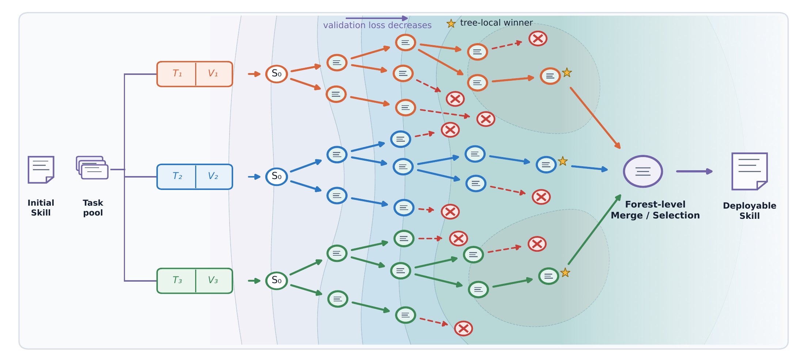
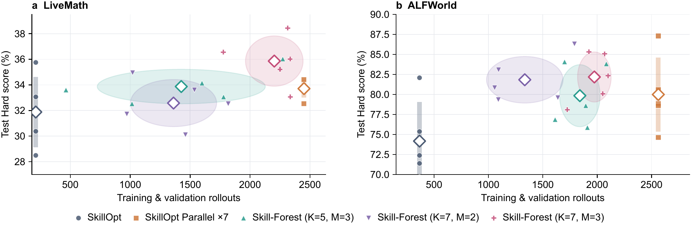

01 / 多样性
Skill 优化器集成
在目标模型与优化器能力匹配的设置下，独立优化树、保留分支和树专属数据划分，同时丰富文本更新路径与验证视角。
高效的skill优化随机森林
基于文本梯度的 Skill 优化受到随机噪声的影响，使整个优化过程呈现高方差和不稳定性。 Skill-Forest 在不同的训练–验证数据视角下生长独立的 Skill 优化树，结合共享扩展预算、增益优先扩展、验证引导剪枝和提前拒绝，高效构建森林。随后，通过层次化合并或直接选择，聚合各树的 local winner，得到一个最终可部署的 Skill，无需更新模型参数，也不依赖更强的优化模型。

Agent Skills 将可复用的过程性知识编码在模型参数之外，从而适配参数冻结的大语言模型智能体。在数据有限的情况下，带噪声的文本更新，以及在小规模验证集上的反复选择，会使单一路径优化对早期决策和评估噪声较为敏感。
我们提出 Skill-Forest：受随机森林“随机化与聚合”原则启发的优化器层面集成方法。每棵树使用独立采样的训练–验证划分，独立搜索树内最优 Skill。共享预算下的增益优先扩展、验证引导剪枝和提前拒绝，实现高效的森林构建。随后，通过直接选择（Select）或层次化合并（Merge），将各树最优 Skill 聚合为一个可部署的 Skill。该设计同时丰富优化路径和验证视角，以降低文本梯度优化的高方差。
我们在五个基准上评估 Skill-Forest，涵盖直接对话任务、工具使用和持续环境交互。七树 Select 和 Merge 相比 No-skill 的平均留出测试 Hard 分数分别提高 12.82 和 12.87 个百分点，相比 SkillOpt 分别提高 2.59 和 2.63 个百分点。相较完整构建深度为三的三叉树，七树 Skill-Forest 的训练与验证 rollout 数减少 71.68%，支持高效的多路径 Skill 优化。
在目标模型与优化器能力匹配的设置下，独立优化树、保留分支和树专属数据划分，同时丰富文本更新路径与验证视角。
共享扩展预算、增益优先生长、验证引导剪枝、提前拒绝和 Root 分数缓存，将计算资源集中在有潜力的分支上。
通过直接选择（Select）或分数引导的层级合并（Merge），聚合各树的 local winner，产生最终可部署的 Skill。Merge 在每一层合并相邻的 Skill，保留兼容规则，并依据完整训练集上的可比分数引导冲突消解，逐层合并直至得到一个 Skill。
所有树从同一个初始 Skill 出发，基于独立的训练-验证视图执行反馈，探索各自的局部最优结果。
独立地将公开训练集划分为树内训练子集和验证子集。训练轨迹用于生成补丁，验证子集用于评估补丁。
每次扩展采样多个补丁，仅保留相对父节点具有正验证增益的子节点，并在森林共享预算下优先扩展已接受的节点。
从每棵符合条件的树中保留一个具有正增益的优胜 Skill，在完整训练集上评估后，选择其中一个或进行层次化合并。
在逐步验证过程中，如果候选 Skill 即使在所有剩余任务上获得满分，也无法超过父节点，就立即拒绝。这保留了与完整验证相同的候选集合。
缓存初始 Skill 在每个不同验证任务上的分数。各树从缓存计算自己的 Root 分数，避免在重叠任务上重复评估。
树内的正验证增益并不保证留出测试性能提高，也不意味着不同树的分数可以直接比较。
涵盖直接对话推理、多轮工具使用和持续环境交互。以下结果来自当前论文初稿。
平均留出测试 Hard 分数
七树 Merge
相比 No-skill 的总体增益
七树 Merge
相比 SkillOpt 的总体增益
七树 Merge
构建阶段 rollout 减少
相对完整三叉树构建
每种方法进行三次留出测试评估。总体分数是五个基准的平均值。在较小屏幕上可横向滚动。“—”表示结果不可用。
| 方法 | SearchQA | SpreadsheetBench | OfficeQA | LiveMath | ALFWorld | 总体 |
|---|---|---|---|---|---|---|
| 无 Skill（No-skill） | 76.90 | 80.24 | 28.49 | 27.42 | 56.97 | 54.00 |
| 初始 Skill | 76.67 | 79.40 | 43.99 | 28.23 | 70.65 | 59.79 |
| Skill Creator | 79.36 | 80.60 | 56.20 | 31.18 | 77.36 | 64.94 |
| Trace2Skill | 77.50 | 81.79 | 54.84 | 27.69 | 76.62 | 63.69 |
| GEPA | 79.62 | — | — | 31.45 | — | — |
| SkillOpt | 80.67 | 80.71 | 52.71 | 31.72 | 75.37 | 64.24 |
| 五树 Skill-Forest | ||||||
| Merge | 80.26 | 81.79 | 55.04 | 34.68 | 82.09 | 66.77 |
| Select | 80.40 | 81.19 | 54.84 | 34.14 | 78.61 | 65.84 |
| Oracle † | 80.40 | 81.31 | 54.84 | 34.95 | 83.33 | 66.97 |
| 七树 Skill-Forest | ||||||
| Merge 本文 | 80.52 | 81.07 | 55.23 | 34.68 | 82.84 | 66.87 |
| Select 本文 | 80.21 | 81.67 | 53.88 | 36.02 | 82.34 | 66.82 |
| Oracle † | 81.12 | 83.10 | 55.04 | 36.02 | 82.34 | 67.52 |
粗体表示每列最高分，包含诊断项。† Oracle 依据留出测试分数选择，用于诊断各树优胜 Skill 构成的候选池；它不是可部署方法，也不是新合并 Skill 的性能上界。
七树 Merge 在初稿中的可部署方法里取得最高总体分数。Merge 和 Select 均不具有一致优势，Skill-Forest 也并非在每个基准上都超过所有基线。
71.68% 的降幅基于五个基准训练与验证次数之和，相对完整构建深度为三的三叉树计算。该统计不包含最终选择、聚合和留出测试。
在 LiveMath 和 ALFWorld 上进行重复优化实验，考察树数量、分支宽度和并行优化轨迹的影响。

初稿引用信息。正式发表信息将在可用时更新。
@misc{skillforest2026,
title = {Skill-Forest: Randomized Ensembles of Textual Skill Optimizers},
year = {2026},
note = {Draft manuscript},
url = {https://skill-forest.github.io/}
}